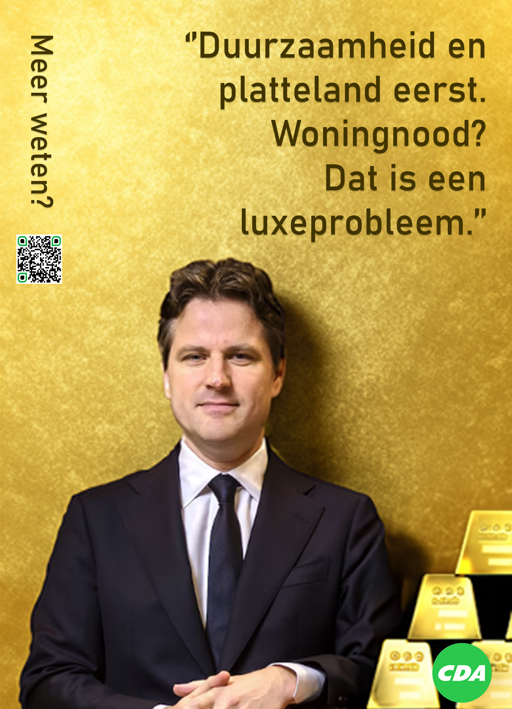

Als partijleider van het CDA en mede-architect van het coalitieakkoord benadrukte Henri Bontenbal vaker het belang van duurzaamheid en het beschermen van het Nederlandse platteland. Bouwen in open gebieden moest worden beperkt, natuur en landbouw moesten prioriteit krijgen.
Dit voelt aan als een moeilijke balans: het platteland beschermen betekende ook minder ruimte om nieuwe woningen te bouwen.
De uitspraak "Duurzaamheid en platteland eerst. Woningnood? Dat is een luxeprobleem." symboliseert deze tegenstrijdigheid.